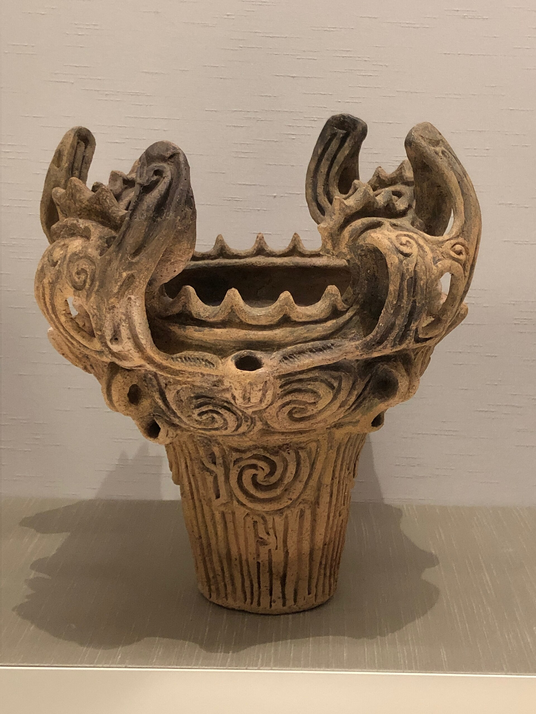
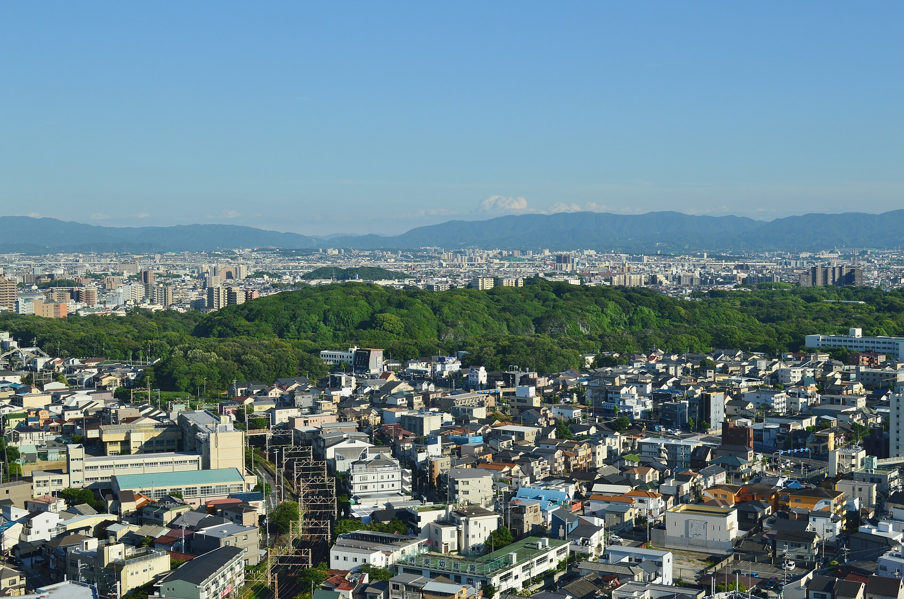
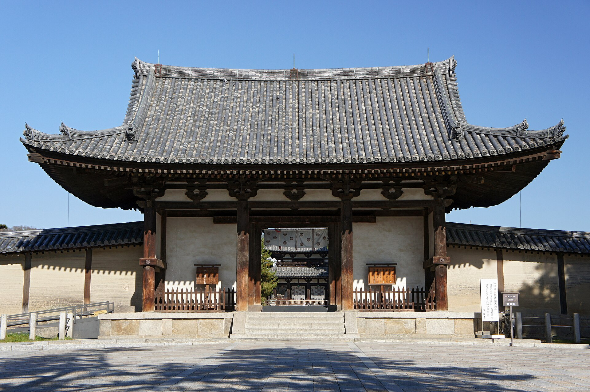

Überblick
Die Epoche Frühzeit–Heian umfasst die vorgeschichtliche und frühe historische Entwicklung Japans vom Jōmon über Yayoi, Kofun, Asuka und Nara bis zum Ende der Heian-Zeit um 1185. Sie reicht von jägerischen und sammelnden Gemeinschaften mit charakteristischer Schnurkeramik über die Einführung des Nassreisanbaus und kontinentaler Metalltechniken bis zur Ausbildung eines zentralisierten Hofstaats nach chinesischem Vorbild und einer höfischen Kultur, die später von Kriegerclans abgelöst wurde.
Archäologisch und chronologisch ist die Datierung der Frühphasen nicht überall einheitlich. Für die Jōmon-Zeit nennen Übersichtswerke Beginn und Ende unterschiedlich (häufig etwa 14.500/10.500 v. Chr. bis um 300 v. Chr., teils mit spätem Ausklingen in den Norden); die Yayoi-Zeit wird traditionell oft mit ca. 300 v. Chr. bis ca. 250/300 n. Chr. angesetzt, während neuere Forschungen frühere Anfänge diskutieren. Die Kofun-Zeit (etwa 3. bis Mitte 6. Jahrhundert) ist nach den großen Grabhügeln (kofun) benannt. Asuka und Nara markieren die Einführung des Buddhismus und den Ausbau des Ritsuryō-Staats; die Heian-Zeit (794–1185) gilt als klassisches Zeitalter der Hofkultur in Heian-kyō (dem heutigen Kyōto).
Gemeinsamer roter Faden ist die allmähliche Verdichtung politischer Macht, der intensive Kulturtransfer aus Korea und China sowie die Verschränkung einheimischer Glaubenspraktiken (später als Shintō gefasst) mit dem Buddhismus. Am Ende der Epoche stand nicht der Untergang des Kaisertums, sondern die Verlagerung realer Macht auf Kriegerinstitutionen, die in Kamakura eine Militärregierung (bakufu) aufbauten.
Akteure
- Jōmon-Gemeinschaften: Jäger, Fischer und Sammler in oft halbständigen Siedlungen; materiell geprägt durch Schnurkeramik (jōmon), Grubenwohnhäuser und Tonfiguren (dogū). Keine namentlich bekannten Herrscher.
- Yayoi-Bauern und Häuptlinge: Träger des Nassreisanbaus, der Metallverarbeitung und wachsender sozialer Hierarchie; Dorfführer und Stammeskonföderationen bereiteten politische Zentralisierung vor.
- Himiko (3. Jh.): In chinesischen Quellen (insbesondere dem Wei zhi / Bericht über die Wa im Sanguo zhi) als schamanische Herrscherin von Yamatai beschrieben; entsandte Gesandte an den Wei-Hof. In den ältesten japanischen Chroniken nicht namentlich belegt. Lage Yamatais (Nord-Kyūshū oder Kinai) und Identifikation mit Gestalten der japanischen Überlieferung bleiben umstritten.
- Yamato-Oberhäupter und Clane (uji): Ab der Kofun-Zeit Konsolidierung eines Königstums im heutigen Nara-Becken; Clane wie Soga, Mononobe und Nakatomi prägten Hof und Kult. Titulatur und Genealogie der frühen „Großkönige“ (ōkimi) sind teils mythisch überformt.
- Prinz Shōtoku (traditionell 574–622): Als Regent unter Kaiserin Suiko mit der Förderung des Buddhismus, dem Hōryū-ji und der sogenannten Siebzehn-Artikel-Verfassung (604) verbunden. Die Überlieferung stammt vor allem aus dem Nihon shoki (720); moderne Forschung betont legendäre Züge und die Rolle der Soga neben der persönlichen Leistung.
- Soga und Reformer der Taika-Zeit: Die Soga setzten den Buddhismus am Hof durch; 645 stürzten Prinzen und Nakatomi no Kamatari die Soga-Führung. Die Taika-Edikte (ab 646) und spätere Gesetzeswerke (u. a. Taihō-Kodex 701/702) zielten auf einen zentralisierten Ritsuryō-Staat.
- Kaiser Shōmu und Kaiserin Kōmyō (8. Jh.): Förderung des Staat-Buddhismus; Weihe des Großen Buddha im Tōdai-ji (752); Stiftung kaiserlicher Schätze an den Tōdai-ji (756), Grundlage der Sammlung des Shōsōin.
- Fujiwara-Regenten, besonders Fujiwara no Michinaga (966–1028): Dominanz durch Heiratspolitik und Regentschaften (sesshō, kampaku); Höhepunkt etwa 995–1027.
- Hofdichterinnen und Autorinnen: u. a. Murasaki Shikibu (Genji monogatari, um 1000/1010) und Sei Shōnagon (Makura no sōshi); zentrale Stimmen der volkssprachlichen Hofkultur.
- Kaisertum und Insei: Ab Kaiser Shirakawa (ab 1086) verstärktes Regieren aus dem Klosterpalast (insei), parallel zur Fujiwara-Macht.
- Taira und Minamoto: Kriegerclane, die im 12. Jahrhundert in Hofkonflikte (Hōgen 1156, Heiji 1159) und den Genpei-Krieg (1180–1185) eintraten; Minamoto no Yoritomo baute nach dem Sieg die Kamakura-Herrschaft auf.
Was geschah
Jōmon

Die Jōmon-Zeit ist nach der typischen Schnurmuster-Keramik benannt. Sie gehört zu den frühesten keramikführenden Kulturen der Welt. Die Menschen lebten überwiegend von Jagd, Fischfang und Sammeln (Nüsse, Wurzeln, Meeresfrüchte); begrenzter Pflanzenanbau wird diskutiert, war aber nicht die Grundlage der Wirtschaft. Siedlungen bestanden oft aus wenigen Grubenwohnhäusern mit zentraler Feuerstelle; regionale Tauschbeziehungen (z. B. Obsidian, Salz) sind archäologisch greifbar.
Kulturell auffällig sind neben Gefäßen die dogū-Figuren und Steinartefakte mit vermutetem Fruchtbarkeits- oder Kultbezug. Datierungen und Phasenbezeichnungen (Incipient, Early, Middle, Late, Final) variieren nach Forschungsstand und Region; in Osthonshū und Hokkaidō hielt sich jōmonartige Lebensweise länger als im Westen. Klimawandel nach der Eiszeit und die Isolation der Inseln nach dem Anstieg des Meeresspiegels rahmen die Epoche: Japan war geografisch vom Kontinent getrennt, entwickelte aber eigene, langlebige Siedlungstraditionen.
Yayoi
Ab dem späten Jōmon und verstärkt in der Yayoi-Zeit erreichten kontinentale Techniken den Archipel: Nassreisanbau mit Bewässerung, Eisen- und Bronzebearbeitung, neue Keramikformen und Webtechniken. Die Kultur ist nach dem Fundort Yayoi in Tōkyō benannt. Sie setzte sich zunächst in Nord-Kyūshū durch und breitete sich nach Osten und Norden aus. Ob Immigration, Akkulturation oder beides überwogen, ist Gegenstand anhaltender Debatten; die meisten Überblicke gehen von sukzessiven Einwanderungswellen und Vermischung mit ansässigen Jōmon-Gruppen aus.
Reisanbau erhöhte die Tragfähigkeit der Landschaft und förderte dauerhafte Dörfer, Speicher und Konflikte um Wasser und Boden. Befestigte Siedlungen und Grabbeigaben deuten auf soziale Schichtung hin. Ritualbronzen (u. a. dōtaku-Glocken) und Spiegel belegen religiöse und repräsentative Praktiken. Gegen Ende der Yayoi-Zeit bildeten sich Konföderationen; chinesische Berichte über „Wa“ (倭) spiegeln diesen Übergang zu erkennbar organisierten Gemeinwesen wider.
Kofun und Yamato-Staat

Die Kofun-Zeit (ca. 3. bis Mitte 6. Jh.) ist nach monumental aufgeschütteten Grabhügeln benannt, darunter die charakteristischen schlüssellochförmigen Anlagen mit Gräben. Die größten liegen im Nara- und Ōsaka-Raum und bezeugen die Fähigkeit, große Arbeitskräfte zu mobilisieren. Beigaben umfassen Waffen, Rüstungen, Spiegel, Pferdegeschirr und Tonzylinder bzw. figürliche haniwa am Grabhügel. Sue-Keramik und kontinentale Technik zeigen fortgesetzten Austausch mit der Koreanischen Halbinsel.
Im Yamato-Becken konsolidierte sich eine Herrschaft, die andere Regionalpolities (u. a. Kibi, Izumo) allmählich überlagerte oder einband. Gesellschaftlich strukturierten uji (Clane) und be (Berufs- bzw. Dienstgruppen) den Hof. Chinesische Quellen erwähnen „Könige von Wa“ und Tributgesandtschaften; japanische Mythen (später in Kojiki und Nihon shoki fixiert) leiten die Herrscherlinie von der Sonnengöttin Amaterasu ab. Die genaue Entstehung des Yamato-Königtums, mögliche kontinentale Einflüsse und die Rolle reiteraristokratischer Elemente bleiben Forschungsfelder mit unterschiedlichen Modellen.
Asuka

Mit der Asuka-Zeit (traditionell ab der Einführung des Buddhismus, oft 538 oder 552) tritt Japan stärker in die schriftlich dokumentierte Geschichte ein. Der König von Baekje (Paekche) sandte dem Yamato-Hof buddhistische Schriften und eine vergoldete Statue; die Annahme des neuen Glaubens spaltete den Hof. Die Soga befürworteten den Buddhismus, Mononobe und Nakatomi widersetzten sich. Nach dem Sieg der Soga (587) und unter Kaiserin Suiko förderte der Hof Tempelbau und kontinentale Verwaltungsformen.
Prinz Shōtoku wird mit Hōryū-ji, buddhistischer Gelehrsamkeit und der Siebzehn-Artikel-Verfassung von 604 verbunden: moralisch-politische Maximen, die Harmonie, Gehorsam gegenüber kaiserlichen Befehlen und Achtung der Buddha-Lehre betonen. Historiker behandeln ihn als halbhistorische Figur, deren Bild im 8. Jahrhundert stilisiert wurde. Nach seinem Tod (622) und dem Sturz der Soga 645 folgten die Taika-Reformen: Stärkung der kaiserlichen Zentralgewalt, Neuordnung von Land und Steuern, Aufbau einer Provinzverwaltung nach chinesischem Muster. Der Weg zum Ritsuryō-Staat (Straf- und Verwaltungsrecht, ritsu und ryō) setzte sich über weitere Kodizes fort.
Nara
710 wurde Heijō-kyō (nahe dem heutigen Nara) als dauerhafte Hauptstadt nach dem Raster Chang’ans gegründet. Die Nara-Zeit (710–794) brachte die ersten erhaltenen großen japanischen Geschichtswerke: Kojiki (712) und Nihon shoki (720), die Mythos, Genealogie und Herrschaftslegitimation verbinden. Die Man’yōshū (um 759) sammelte frühe japanische Dichtung.
Der Ritsuryō-Staat regelte Beamtenhierarchie, Haushaltsregister, Steuern, Militär und Tempelverwaltung. Kaiser Shōmu förderte den Buddhismus als staatstragende Religion; der Tōdai-ji mit dem Großen Buddha (Weihe 752) symbolisierte diesen Anspruch. 756 stiftete Kaiserin Kōmyō persönliche Schätze des verstorbenen Shōmu dem Tempel. Sie bildeten den Kern der späteren Shōsōin-Sammlung: Ritualgegenstände, Textilien, Instrumente und Dokumente, vielfach im Tang-Stil, die den internationalen Horizont der Epoche dokumentieren. Gleichzeitig wuchs der Einfluss großer Tempel; politische Spannungen und der Wunsch, die buddhistische Macht in Nara zu begrenzen, trugen zu späteren Hauptstadtverlegungen bei.
Heian
794 verlegte Kaiser Kanmu den Hof nach Heian-kyō. Die Heian-Zeit (794–1185) gilt als Blüte der aristokratischen Hofkultur. Das chinesisch geprägte Zentralmodell blieb formell bestehen, wurde aber durch Privatgüter (shōen), Steuerprivilegien und die Abwesenheit vieler Adliger von der Provinzverwaltung ausgehöhlt. Ab dem mittleren 9. Jahrhundert dominierten die Fujiwara durch Heirat ihrer Töchter mit Kaisern und durch Regentschaftsämter. Fujiwara no Michinaga brachte diese Macht auf den Höhepunkt.
Kulturell entstanden aus chinesischen Schriftzeichen die Silbenschriften Hiragana und Katakana. Hofdamen schrieben volkssprachliche Werke von welthistorischer Bedeutung: Murasaki Shikibus Genji monogatari schildert Liebe, Rang und Ästhetik am Hof; Sei Shōnagons Kopfkissenbuch hielt Beobachtungen und Geschmacksurteile fest. Religiös etablierten sich Tendai und Shingon mit esoterischen Ritualen; zugleich gewannen Amidismus und einfachere Heilslehren an Popularität.
Politisch trat ab 1086 das insei (Klosterregierung abgedankter Kaiser) neben die Fujiwara. In den Provinzen wuchsen Kriegerbanden zum Schutz von Gütern und für Konflikte um Land. Die Hōgen- (1156) und Heiji-Unruhen (1159) holten Taira und Minamoto an den Hof. Die Taira unter Kiyomori dominierten zeitweise, vernachlässigten aber die Provinzen. Im Genpei-Krieg (1180–1185) besiegten die Minamoto die Taira; die Seeschlacht von Dan-no-ura 1185 besiegelte den Fall der Taira. Minamoto no Yoritomo konsolidierte von Kamakura aus eine Militärverwaltung und erhielt später den Titel Shōgun. Damit endete die Heian-Epoche als Phase höfischer Vorrangstellung.
Beginn
Der Beginn dieser Gesamtepoche liegt nicht in einem einzelnen Ereignis, sondern in der langen vorgeschichtlichen Besiedlung des Archipels. Nach der Paläolithikum-Phase (Steinwerkzeuge, vor-keramisch) markiert die Jōmon-Keramik den Einstieg in die hier behandelte Frühzeit. Jäger-Sammler-Gemeinschaften entwickelten dauerhafte Siedlungsmuster und eine reiche materielle Kultur, ohne dass ein Staat entstand.
Der entscheidende soziale Umschlag setzte mit dem Yayoi-Komplex ein: Nassreis, Metall und kontinentale Einflüsse schufen die Voraussetzungen für Hierarchie, Territorialkonflikte und Häuptlingstümer. Die Kofun-Gräber und das Yamato-Königtum machen diesen Prozess monumental sichtbar. Der Übergang zur „historischen“ Zeit im engeren Sinn erfolgt mit chinesischen Berichten über Wa und Himiko sowie, im 6. Jahrhundert, mit Buddhismus und Schriftkultur am Hof. Asuka und die Taika-/Ritsuryō-Reformen bezeichnen den bewussten Versuch, Herrschaft nach kontinentalem Staatsmodell zu ordnen. Nara und Heian-kyō sind dann die urbanen Kristallisationspunkte dieses Programms.
Ende / Übergang
Das Ende der Heian-Zeit ist weniger ein abrupter Kulturbruch als ein Machtwechsel. Der Kaiserhof in Kyōto blieb symbolisch und rituell zentral; die reale Herrschaft über Land, Krieger und Rechtsprechung verlagerte sich auf die Minamoto und ihre Vasallen. Der Genpei-Krieg (1180–1185) zerstörte die Taira-Vorherrschaft. Yoritomo etablierte in Kamakura Ämter wie shugo und jitō, die militärische und fiskalische Kontrolle in den Provinzen sicherten. Traditionell wird die Ernennung zum Shōgun 1192 hervorgehoben; viele Darstellungen setzen den Beginn der Kamakura-Zeit bereits mit 1185 an, dem Jahr der Entscheidung und der faktischen Grundlagen des bakufu.
Damit beginnt die mittelalterliche Kriegerordnung: Samurai als politische Klasse, Doppelstruktur von Kaiserhof und Militärregierung, und eine Gesellschaft, in der Provinz und Waffe den Vorrang vor der reinen Hofästhetik der Fujiwara-Zeit einnahmen. Die kulturellen Errungenschaften der Heian-Zeit (Schrift, Literatur, religiöse Schulen) wirkten fort, standen aber unter neuen Herren.
Quellen
- Encyclopaedia Britannica – „Jōmon culture“: https://www.britannica.com/topic/Jomon-culture
- Encyclopaedia Britannica – „Tumulus period“ (Kofun): https://www.britannica.com/event/Tumulus-period
- Encyclopaedia Britannica – „Gempei War“: https://www.britannica.com/event/Gempei-War
- Encyclopaedia Britannica – „Taika era reforms“: https://www.britannica.com/event/Taika-era-reforms
- Encyclopaedia Britannica – „Shōsō Repository“: https://www.britannica.com/topic/Shoso-Repository
- Metropolitan Museum of Art, Heilbrunn Timeline – „Japan, 1000 B.C.–1 A.D.“: https://www.metmuseum.org/toah/ht/04/eaj
- Metropolitan Museum of Art – „Yayoi Culture (ca. 300 B.C.–300 A.D.)“: https://www.metmuseum.org/essays/yayoi-culture-ca-4th-century-b-c-3rd-century-a-d
- Metropolitan Museum of Art – „Kofun Period (ca. 3rd century–538)“: https://www.metmuseum.org/essays/kofun-period-ca-3rd-century-538
- Martin Collcutt für Japan Society – „Early Japan (50,000 BC – 710 AD)“ (2003; nach Cultural Atlas of Japan, 1988): https://japansociety.org/news/early-japan-50000-bc-710-ad/
- Japan National Tourism Organization – „An Overview of Japanese History“: https://www.japan.travel/en/responsible-travel-guide/features/overview-japanese-history/
- Cambridge University Press – The Cambridge History of Japan, Vol. 2 (Heian Japan), Überblick: https://www.cambridge.org/core/books/cambridge-history-of-japan/2B17CE35701F457D0075A4748A20ABCC
- Bennington College LibGuide (Zusammenfassung Britannica/Heian-Hof) – „Heian period overview“: https://libraryguides.bennington.edu/courtly/heian
- Imperial Household Agency / Shōsōin – „History of the Shosoin“: https://shosoin.kunaicho.go.jp/en-US/about/history/
- J. Edward Kidder, Jr. – Himiko and Japan’s Elusive Chiefdom of Yamatai (University of Hawai‘i Press, 2007): https://muse.jhu.edu/book/8226
- Nippon.com – „The Genpei War: A Timeline“: https://www.nippon.com/en/japan-data/h01226/